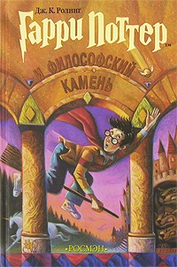

| Обложка |
Название книги |
Автор |
Краткая аннотация |
|  |
Гарри Поттер и философский камень |
Джоан Роулинг |
Одиннадцатилетний мальчик-сирота Гарри Поттер живет в семье своей тетки и даже не подозревает, что он - настоящий волшебник. Но однажды прилетает сова с письмом для него, и жизнь Гарри Поттера изменяется навсегда. Он узнает, что зачислен в Школу Чародейства и Волшебства, выясняет правду о загадочной смерти своих родителей, а в результате ему удается раскрыть секрет философского камня. |
|
Джейн Эйр |
Бронте Шарлотта |
История сиротки Джейн, в раннем возрасте оставшейся без родителей на попечении своей злобной тетушки миссис Рид, позже отданной на воспитание в убогий пансионат, а в более зрелом возрасте зарабатывавшей себе на жизнь гувернанткой и учительницей. |
|
Портрет Дориана Грея |
Оскар Уайльд |
Дориан Грей — юноша, наделённый невероятной красотой. Попадая под влияние идей нового гедонизма, проповедуемых лордом Генри, посвящает свою жизнь жажде наслаждений и порока. Это фигура двойственная. В нём сочетаются тонкий эстет и даже романтик и порочный, безжалостный преступник. Эти две противоположные стороны его характера находятся в постоянной борьбе друг с другом. Данная двойственность героя характерна для многих готических романов. |
|
Цветы для Элджернона |
Даниел Киз |
Главный герой — Чарли Гордон, 37-летний мойщик полов, служащий компании-производителя пластиковой тары (в романе — 32-летний умственно отсталый уборщик в хлебопекарне), добровольно участвует в эксперименте по улучшению интеллекта. Искусственное улучшение интеллекта путём хирургической операции — оригинальное открытие двух учёных: доктора Штраусса и доктора Немюра. После успешной операции над мышью по кличке Элджернон они решают провести аналогичную операцию над каким-нибудь умственно отсталым человеком. Выбор останавливается на Чарли, так как он показывает стремление научиться лучше читать и писать, стать умнее. |
|
Гордость и предубеждение |
Джейн Остин |
В небогатом семействе Беннет – пять дочерей, мать мечтает лишь о том, как бы выдать их замуж. Рядом поселяется состоятельный молодой джентльмен по имени мистер Бингли вместе с холостым и обеспеченным другом мистером Дарси. Бингли знакомится со старшей дочерью Джейн и между ними возникает взаимная симпатия. |
|
Поющие в терновнике |
Колин Маккалоу |
История начинается в 1915 году и охватывает полстолетия. Книга разбита на семь частей, в каждой из которых раскрывается характер одного из главных героев. В центре сюжета — жизнь семьи Клири, проделавшей путь от новозеландских бедняков до управителей одного из крупнейших австралийских поместий Дрохеды. |
| Обложка |
Название книги |
Автор |
Краткая аннотация |
 |
Дэнс, дэнс, дэнс |
Харкуки Мураками |
…И тут я наконец осознал: вокруг меня — кромешная тьма. Ни лучика света. Двери лифта все так же беззвучно затворились у меня за спиной, и эта тьма стала черной, как битумный лак. Я не различал даже собственных рук. Музыка тоже исчезла. В зябком воздухе едко пахло какой-то хиной. И в этой кромешной тьме я стоял, не дыша, совершенно один. |
|
Охота на овец |
Мураками Хю |
Основан на древней китайской легенде о переселении души Овцы в человека. Овца полностью заменяет личность, взамен человеку даются неограниченные возможности и силы, направленные на установление всемирного господства Анархии. |
|
Мемуары гейши |
Артур Голден |
Искусство гейши — не обольщать мужчин, но покорять их... Ее профессия — развлекать и очаровывать. Но вступать в связь с клиентом строго запрещено, а полюбить кого-то из них считается позором. Перед вами — история Саюри, девушки из простой крестьянской семьи, ставшей королевой гейш Киото. |
|
Кафка на пляже |
Харуки Мураками |
Я заметил, что на груди белой майки налипло что-то черное, по форме — вроде большой бабочки с раскрытыми крыльями… В мерцающем свете люминесцентной лампы стало понятно: это темно-красное кровавое пятно. Кровь свежая, еще не засохла. Довольно много. Я наклонил голову и понюхал пятно. Никакого запаха. Брызги крови — совсем немного — оказались и на темно-синей рубашке, где она была не так заметна. А на белой майке — такая яркая, свежая… |
|
Норвежский лес |
Харуки Мураками |
... по вечерам я продавал пластинки. А в промежутках рассеянно наблюдал за публикой, проходившей перед витриной. Семьи, парочки, пьяные, якудзы, оживленные девицы в мини-юбках, парни с битницкими бородками, хостессы из баров и другие непонятные люди. Стоило поставить рок, как у магазина собрались хиппи и бездельники - некоторые пританцовывали, кто-то нюхал растворитель, кто-то просто сидел на асфальте. Я вообще перестал понимать, что к чему. "Что же это такое?" - думал я. - Что все они хотят сказать?"... |
| Обложка |
Название книги |
Автор |
Краткая аннотация |
|
Академия Черной птицы. Уничтожить тьму |
Стелла Так |
Академия Черной птицы — это место, которому нет равных. В этой темной школе обучаются экзорцисты, задача которых защищать человечество от демонов. Когда Лиф Янг просыпается в подземелье Академии,она не может поверить в то, что ей объясняет привлекательный парень по имени Фалько: демон овладел ею вскоре после того, как вонзил кинжал в ее сердце! |
 |
Вавилон. Сокрытая история |
Ребекка Куанг |
Вавилон — престижный Королевский институт переводов Оксфордского университета — является мировым центром не только переводов, но и магии. Именно здесь зачаровывают серебряные слитки, позволяющие открыть потерянные при переводе смыслы. Такая уникальная сила наделила Британскую империю невиданной властью, а исследование Вавилона в области переводов и иностранных языков позволила развивать масштабную внешнюю политику. |
|
Тайная история |
Донна Тартт |
Ричард Пейпен приезжает изучать древнегреческий язык. Новые друзья Ричарда — четверо молодых людей и одна девушка — умны, раскованны, богаты и так увлечены античной культурой, что рассматривают себя чуть ли не как особую касту ее хранителей. Их дружба не выдерживает, однако, натиска современного мира. В веселой и сплоченной компании происходит убийство. Пытаясь через много лет осмыслить случившееся, герой по дням воспроизводит свою студенческую жизнь, этапы отношений с однокурсниками и любимой девушкой. |
|
Песня Сорокопута |
Фрэнсис Кель |
Отец учил Готье тому, что каждый должен знать свое место в этом мире: Чистокровные правят. Полукровки работают. Низшие разрушают. Джером с детства уяснил только одну истину: Чистокровные празднуют. Полукровки прислуживают. Низшие страдают. Их миры могли никогда не столкнуться, если бы не Скэриэл. |
|
Четвертое крыло |
Ребекка Яррос |
Двадцатилетняя Вайолет Сорренгейл готовилась стать писцом и спокойно жить среди книг и пыльных документов. Но ее мать – прославленный генерал, и она не потерпит слабости ни в каком виде. Поэтому Вайолет вынуждена присоединиться к сотням молодых людей, стремящихся стать элитой Наварры – всадниками на драконах. Однако из военной академии Басгиат есть только два выхода: окончить ее или умереть. |